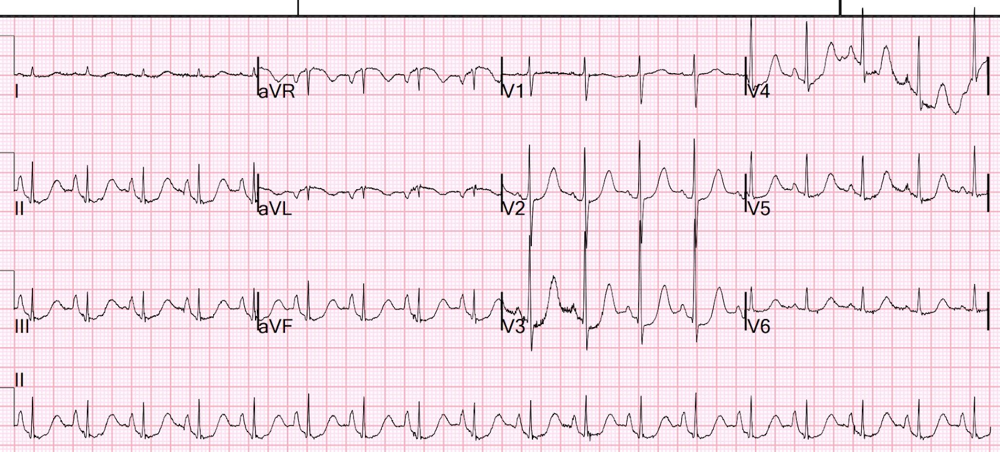
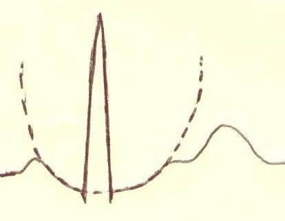
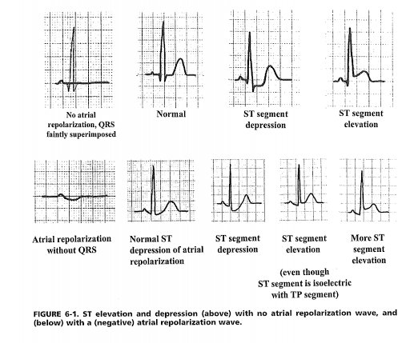
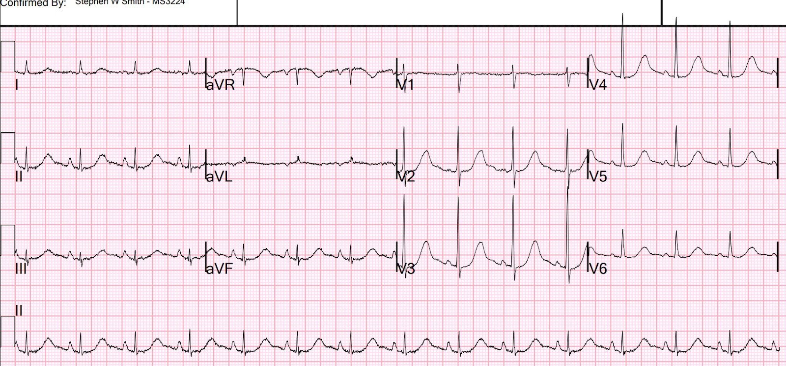
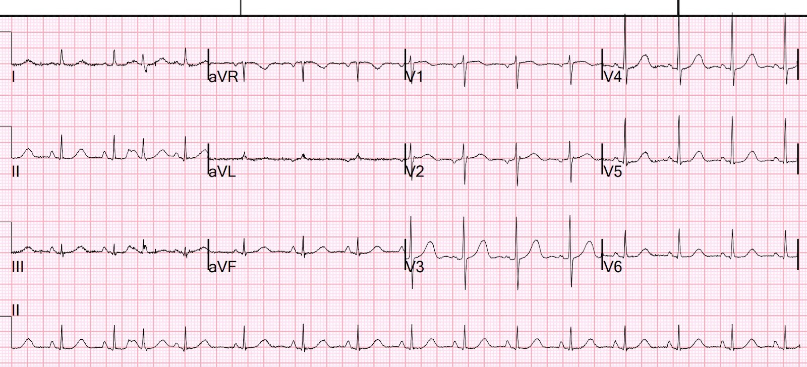
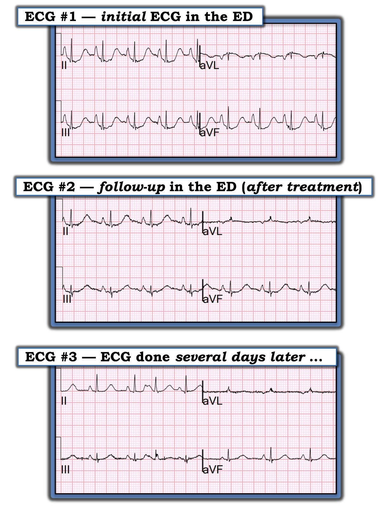

09/12/2021 — Đoạn ST chênh xuống này là gì? (Gợi ý: có 2 nguyên nhân)
Bản dịch tiếng Việt của bài "What is this ST Depression? (Hint: there are 2 etiologies)" – Dr. Smith’s ECG Blog. Giữ nguyên toàn bộ 8 hình ảnh của bản gốc.
Đừng bỏ lỡ phần bình luận của Ken Grauer ở cuối bài!
Một phụ nữ lớn tuổi được phát hiện nằm gục trong phòng ngủ. Khi đội cấp cứu đến, bà tỉnh táo, nhịp tim hơi nhanh, và huyết áp là 225/115. Bà không đau ngực, không khó thở (SOB) hay đau bụng. Bà không có tiền sử nào liên quan đến điện tâm đồ. Ngoài huyết áp, khám lâm sàng không có gì đặc biệt.
Bà được ghi điện tâm đồ:


Bạn nghĩ gì?
Có vẻ như có ST chênh xuống RẤT SÂU. TUY NHIÊN, thực ra nó không sâu đến mức như trông thấy. Hãy chú ý đoạn PR. Có đoạn PR chênh xuống rất sâu. Thực tế, có một sóng tái cực nhĩ sâu, làm cho đoạn ST chênh xuống so với đoạn TP, nhưng không chênh xuống nhiều đến vậy so với điểm nối PQ (điểm khởi đầu QRS).
II, III, aVF có sóng tái cực nhĩ rất sâu mà không kèm ST chênh xuống (STD) do thiếu máu cục bộ. Chuyển đạo aVR có ST chênh lên do sóng tái cực nhĩ (sóng P âm, sóng tái cực dương).
Có ST chênh xuống do thiếu máu cục bộ THÊM VÀO ở V2-V5. Như chúng tôi vẫn thường nói, STD tối đa ở V1-V4 là đặc hiệu cho OMI thành sau TRỪ KHI có lý do để nghi ngờ thiếu máu cục bộ do tăng nhu cầu. Trong ca này có nhịp nhanh và tăng huyết áp nặng, nhiều khả năng là nguyên nhân gây thiếu máu cục bộ.
Sóng tái cực nhĩ (sóng Ta): Xem ca này cùng hình vẽ và sơ đồ sau:
Sudden CP and SOB with Inferior ST Elevation and in STE in V1. Is it inferior and RV OMI? (Đau ngực và khó thở đột ngột kèm ST chênh lên thành dưới và ST chênh lên ở V1. Đây có phải là OMI thành dưới và thất phải?)


Hình này lấy từ sách của tôi, The ECG in Acute MI (2002). (Bản pdf miễn phí tại đây)


Ca bệnh tiếp diễn
Thành phần thiếu máu cục bộ của ST chênh xuống được xử trí bằng điều trị hỗ trợ cho nhịp nhanh và tăng huyết áp, sau đó một điện tâm đồ khác được ghi:


QT dài và sóng tái cực nhĩ sâu vẫn còn, nhưng không còn ST chênh xuống thêm nào.
Máy tính đo QT là 419 ms.
Tôi đo được trên 500 ms.
(Đừng tin vào số đo QT của máy tính!!)
Đây là 7 ca khác có QT dài bị thuật toán máy tính đo sai.
Troponin I độ nhạy cao đỉnh là 80 ng/L, do nhồi máu cơ tim típ 2
Siêu âm tim
Kích thước và bề dày thành thất trái bình thường, chức năng tâm thu tăng động.
Phân suất tống máu thất trái ước tính >75%.
Không có rối loạn vận động thành khu trú.
Kích thước và chức năng tâm thu thất phải bình thường.
Hở van hai lá nhẹ.
Không có hẹp van đáng kể.
Dựa trên hình dạng tĩnh mạch chủ dưới (IVC), áp lực nhĩ phải ước tính thấp.
Vài ngày sau


Giờ không còn sóng tái cực nhĩ.
Tôi không biết vì sao hiện tượng này xảy ra và vì sao nó biến mất.
Những ca tương tự:
Nhịp nhĩ thấp, kèm sóng tái cực nhĩ, giả ST chênh lên ở chuyển đạo V1: Sudden CP and SOB with Inferior ST Elevation and in STE in V1. Is it inferior and RV OMI?
Nhịp nhĩ thấp, kèm sóng tái cực nhĩ, giả OMI thành dưới:
A man in his sixties with chest pain (Một người đàn ông sáu mươi mấy tuổi bị đau ngực)
ST chênh lên của viêm màng ngoài tim bị che khuất bởi sóng tái cực nhĩ: Teenager with chest pain and slightly elevated troponin. What happens then?
Đây là một ca rất hay: Look at this ST Depression
Bản tóm tắt y văn rất hay (bên dưới) từ bài báo này:
Manne JRR. Atrial Repolarization Waves (Ta) Mimicking Inferior Wall ST Segment Elevation Myocardial Infarction in a Patient with Ectopic Atrial Rhythm. Case Rep Med [Internet] 2018;2018:1015730. Truy cập tại: http://dx.doi.org/10.1155/2018/1015730. Toàn văn: https://www.hindawi.com/journals/crim/2018/1015730/
Tài liệu được trích dẫn
1) F. Holmqvist, J. Carlson, và P. G. Platonov, “Detailed ECG analysis of atrial repolarization in humans,” Annals of Noninvasive Electrocardiology, tập 14, số 1, tr. 13–18, 2009. (toàn văn) https://doi.org/10.1111/j.1542-474X.2008.00268.x
2) R. Childers, “Atrial repolarization: its impact on electrocardiography,” Journal of Electrocardiology, tập 44, số 6, tr. 635–640, 2011. https://doi.org/10.1016/j.jelectrocard.2011.07.031
Phần bàn luận từ bài báo trên của Manne JRR.
Sóng tái cực nhĩ (sóng Ta) thường không nhận thấy được trên điện tâm đồ vì nó có biên độ thấp, 100–200 microvolt, và thường bị che khuất bởi phức bộ QRS theo sau [1]. Đôi khi, chúng được thấy dưới dạng sóng lệch âm nông ngay sau sóng P trong các tình trạng có khoảng PR kéo dài, nhưng chúng được thấy rõ nhất ở bệnh nhân blốc tim hoàn toàn, khi sóng Ta và phức bộ QRS tách rời nhau [2]. Trái ngược với phức bộ QRS và sóng T, vốn có cùng cực tính trong điều kiện bình thường, cực tính của sóng P luôn ngược với cực tính của sóng Ta ở tất cả các chuyển đạo [2]. Thời gian của sóng Ta (thời gian trung bình 323 ± 56 ms) nhìn chung dài gấp 2-3 lần sóng P (thời gian trung bình 124 ± 16 ms) [2].
Việc nhận diện sóng Ta thấy được và vị trí của nó là có ý nghĩa, vì nó mang một số hàm ý lâm sàng và chẩn đoán quan trọng. Trong các tình trạng có khoảng PR ngắn như nhịp nhanh xoang, sóng Ta có thể hòa vào đoạn ST và gây ST chênh xuống giống thiếu máu cục bộ cơ tim. Điện thế sóng Ta của một sóng P đảo ngược hoặc ngược dòng luôn lớn hơn điện thế sóng Ta của sóng P xoang [3]. Trong nhịp nhĩ thấp, hoạt hóa nhĩ khởi phát từ một ổ lạc chỗ thay vì từ nút xoang nhĩ, và lan từ dưới lên trên trong tâm nhĩ. Dẫn truyền ngược dòng về nút xoang nhĩ gây ra sóng P đảo ngược ở các chuyển đạo thành dưới, trong khi dẫn truyền xuôi dòng qua nút nhĩ thất tạo ra phức bộ QRS bình thường. Do đó, hoạt hóa ngược dòng của tâm nhĩ hoặc nhịp lạc chỗ xuất phát từ phần thấp của tâm nhĩ tạo ra sóng P âm ở các chuyển đạo thành dưới và hệ quả là gây ra sóng Ta dương. Sự kết hợp giữa sóng P âm và sóng Ta dương quá mức kéo dài vào đoạn ST ở các chuyển đạo thành dưới có thể giống nhồi máu cơ tim cấp có ST chênh lên như ở bệnh nhân của chúng tôi [4]. Hình ảnh tái cực sớm và nhịp thoát nhĩ, vốn gặp kèm tăng trương lực phế vị [5], có thể gây ra những thay đổi giả ST chênh lên tương tự [6]; tuy nhiên, trong ca của chúng tôi không thấy thay đổi tái cực sớm nào (ST chênh lên tại điểm J và trát đậm/khía phần cuối QRS) trên các bản ghi điện tâm đồ lúc nhập viện hoặc điện tâm đồ nền. Sóng Ta quá mức cũng có thể là nguyên nhân gây đáp ứng dương tính giả trong nghiệm pháp gắng sức trên thảm lăn. Nhịp nhanh do gắng sức làm tăng biên độ sóng P và sóng Ta và rút ngắn đoạn PR, do đó đẩy sóng tái cực nhĩ vào đoạn ST. Ở những chuyển đạo có sóng P nổi bật và dương, điều này dẫn đến đoạn PR và đoạn ST chênh xuống rõ rệt khi gắng sức, giống thiếu máu cục bộ cơ tim [7]
Như đã nêu ở đây, hình ảnh giả nhồi máu với đoạn ST chênh lên hoặc chênh xuống giống nhồi máu cơ tim có thể gặp trong các tình trạng lâm sàng khác [8, 9]. Nhiều khi, việc chú ý kỹ đến hình thái ST-T và QRS, các chuyển đạo liên quan và bối cảnh lâm sàng xảy ra các thay đổi đoạn ST sẽ giúp phân biệt các hình ảnh giả nhồi máu này với thiếu máu cục bộ cơ tim. Ví dụ, khi có đoạn PR chênh xuống hoặc sóng tái cực nhĩ nổi bật, việc đo độ lệch đoạn ST so với đoạn TP sẽ cho kết quả không chính xác. Để tránh sai sót, cần đo so với điểm cuối của đoạn PR, chứ không phải đoạn TP [10]. Tuy nhiên, tất cả các tình trạng này, kể cả tái cực nhĩ, đều là chẩn đoán loại trừ, và trong một số trường hợp có thể cần làm các xét nghiệm chẩn đoán phù hợp để loại trừ thiếu máu cục bộ cơ tim trước khi đưa ra chẩn đoán xác định.

===================================
BÌNH LUẬN CỦA TÔI, bởi KEN GRAUER, MD (9/12/2021):
===================================
Chúng ta thường bỏ qua sóng Ta (sóng tái cực nhĩ) — vì chúng ta thường không để ý đến nó, ngay cả khi nó có mặt. Đó là vì vị trí của nó thường ẩn trong phức bộ QRS. Nhưng như chúng tôi đã nhiều lần trình bày trên Dr. Smith’s ECG Blog — một sóng Ta quá mức có thể bộc lộ sự hiện diện của nó dưới dạng những độ lệch đoạn ST bất ngờ gây khó khăn cho chẩn đoán.
- Ví dụ nổi bật nhất là hiện tượng Emery — trong đó sóng P âm lớn ở các chuyển đạo thành dưới kèm khoảng PR ngắn (thường do nhịp nhĩ thấp hoặc nhịp bộ nối) — có thể giống ST chênh lên của nhồi máu cấp (Để xem minh họa hiện tượng này — Xem phần Bình luận của tôi trong bài ngày 3 tháng Sáu năm 2020 trên Dr. Smith’s ECG Blog).
- Ca hôm nay cho thấy tác động ngược lại — trong đó sóng P quá lớn tạo ra hình ảnh điện tâm đồ giống ST chênh xuống do thiếu máu cục bộ.
Giả thuyết của tôi về lý do bệnh nhân hôm nay xuất hiện sóng Ta âm ấn tượng đến vậy, giống ST chênh xuống do thiếu máu cục bộ — và vì sao các sóng Ta quá mức này sau đó biến mất, như sau:
- Không chỉ cực tính sóng Ta bình thường ngược với sóng P ở tất cả các chuyển đạo — mà thời gian bình thường của sóng Ta còn dài hơn đáng kể so với thời gian sóng P bình thường (gấp 2-3 lần thời gian sóng P — Francis). Điều này có thể giải thích một phần tác động “quá mức” lên đoạn ST khi sóng P (và do đó cả sóng Ta) lớn — đặc biệt nếu có những yếu tố khác góp phần gây đáp ứng quá mức với tái cực nhĩ (có lẽ tương tự như cách thuốc hoặc rối loạn điện giải có thể làm đáp ứng với tái cực thất trở nên quá mức dưới dạng QT kéo dài).
- Theo kinh nghiệm nhiều năm của tôi — bệnh nhân suy tim cấp đôi khi biểu hiện tăng cấp tính kích thước sóng P trên điện tâm đồ (giống bất thường nhĩ trái hoặc nhĩ phải) mà không liên quan đến kích thước nhĩ nền — và những thay đổi này biến mất một cách bí ẩn trong vòng 24-48 giờ sau khi điều trị biến cố cấp. Tôi luôn cho đó là một “hiện tượng áp lực” — mà tôi đặt giả thuyết là do suy tim cấp với áp lực cuối tâm trương tăng được truyền ngược về tâm nhĩ. Tôi chưa bao giờ thấy hiện tượng này được mô tả trong y văn — nhưng tôi đã quan sát thấy nó nhiều lần qua việc đọc các điện tâm đồ liên tiếp của những bệnh nhân mà tôi theo dõi lâm sàng.
- Về lý thuyết, rối loạn chức năng tâm trương cấp cũng có thể gây ra hiện tượng tương tự. Hậu quả của tăng huyết áp lâu năm dẫn đến LVH — thất trái dày hơn (cứng hơn) biểu hiện giảm đổ đầy tâm trương — dẫn đến tăng áp lực tâm trương thất — và áp lực tăng này được truyền sang các buồng tim khác. Vì vậy, có lẽ chính “sự căng giãn nhĩ” là nguyên nhân làm tăng biên độ sóng P mà tôi quan sát thấy thoáng qua ở những bệnh nhân này cho đến khi tình trạng lâm sàng cấp của họ hồi phục (khi đó kích thước sóng P trên điện tâm đồ sẽ trở về bình thường).
- Rối loạn chức năng tâm trương cho đến nay gặp nhiều nhất ở phụ nữ lớn tuổi bị tăng huyết áp lâu năm (có vẻ đúng là chân dung của bệnh nhân lớn tuổi trong ca hôm nay). Bệnh nhân hôm nay được phát hiện “nằm gục” trong phòng ngủ. Bà tăng huyết áp rất nặng khi được phát hiện (225/115 mm Hg) — và điện tâm đồ ban đầu cho thấy sóng P ở các chuyển đạo thành dưới rất cao, nhọn. Các điện tâm đồ liên tiếp cho thấy sự tăng kích thước sóng P này giảm dần — khi tình trạng lâm sàng của bà cải thiện (Hình 1).
Giả thuyết của tôi: Xin nhấn mạnh — Nhiều bệnh nhân có sóng P lớn mà không biểu hiện đáp ứng Ta quá mức giống ST chênh xuống do thiếu máu cục bộ. Đây không phải là hiện tượng thường gặp — nếu không chúng ta đã thấy nó nhiều hơn! Nhưng có thể có một nhóm nhỏ bệnh nhân quá nhạy cảm với tác động của sóng Ta quá mức, đáp ứng với “sự căng giãn nhĩ” cấp do rối loạn chức năng tâm thu và/hoặc tâm trương cấp (cả hai thường xảy ra cùng nhau!) — bằng việc tăng đột ngột kích thước sóng P trên điện tâm đồ, kèm theo đáp ứng sóng Ta quá mức trên điện tâm đồ giống ST chênh xuống do thiếu máu cục bộ. Và sau đó, khi tình trạng lâm sàng của bệnh nhân cải thiện (và huyết áp trở về mức “trước stress”) — sóng P và đoạn ST bất thường trở về như mức nền.


Hình 1: Lưu ý sự giảm dần kích thước sóng P qua 3 điện tâm đồ liên tiếp này. Không chỉ sóng P ở các chuyển đạo thành dưới thấp hơn — mà đỉnh của các sóng T này cũng bớt nhọn hơn [người dịch: nguyên văn ghi “T waves”, nhiều khả năng là lỗi đánh máy của “P waves”]. Lưu ý rằng kích thước và hình dạng của sóng P âm ở chuyển đạo aVL cũng bị ảnh hưởng tương tự qua các điện tâm đồ liên tiếp này.